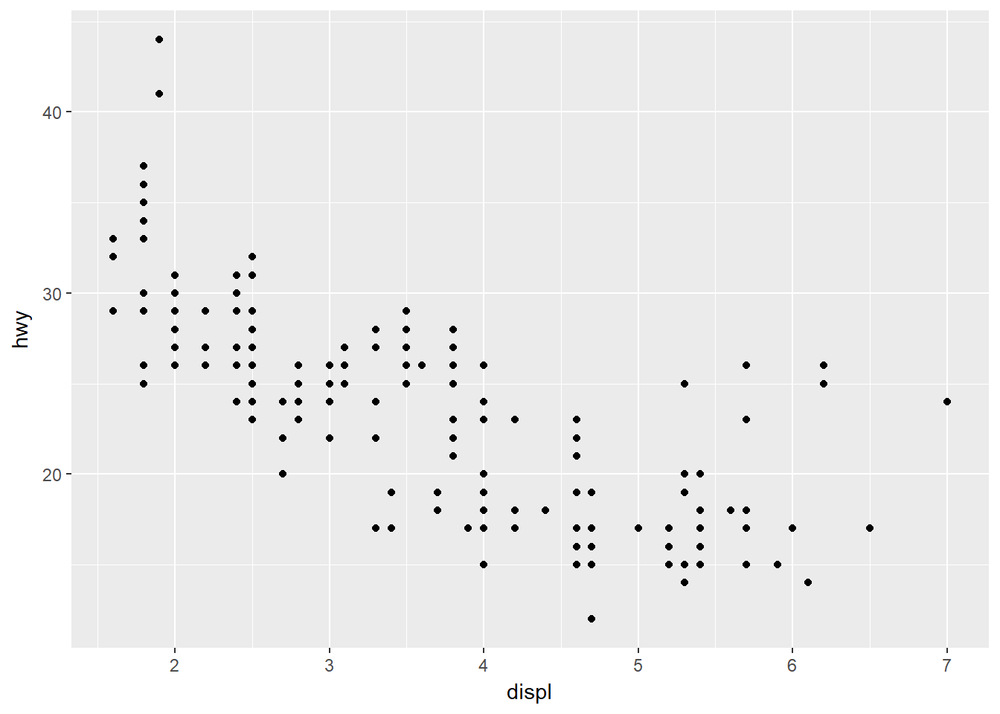
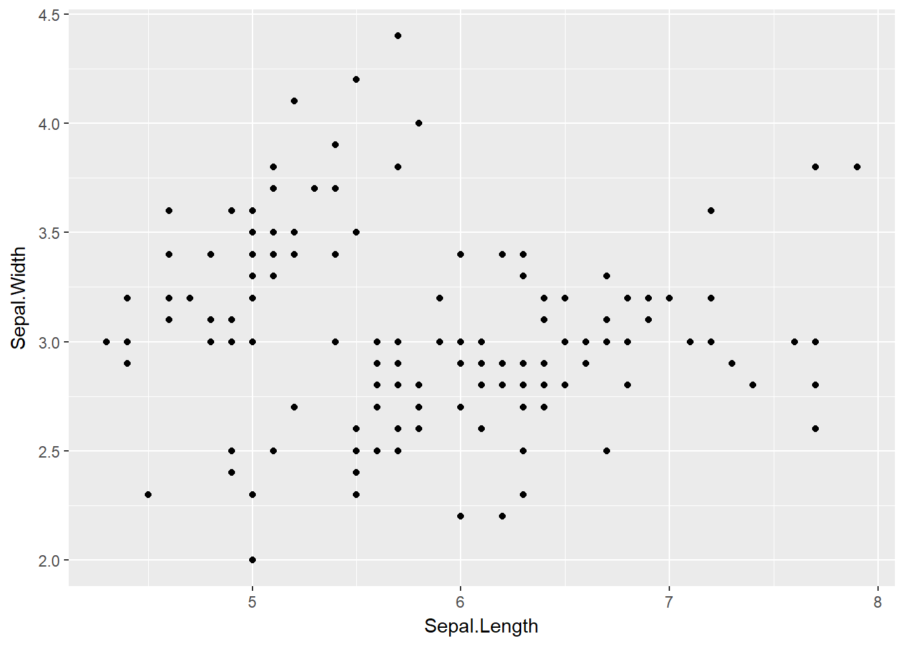
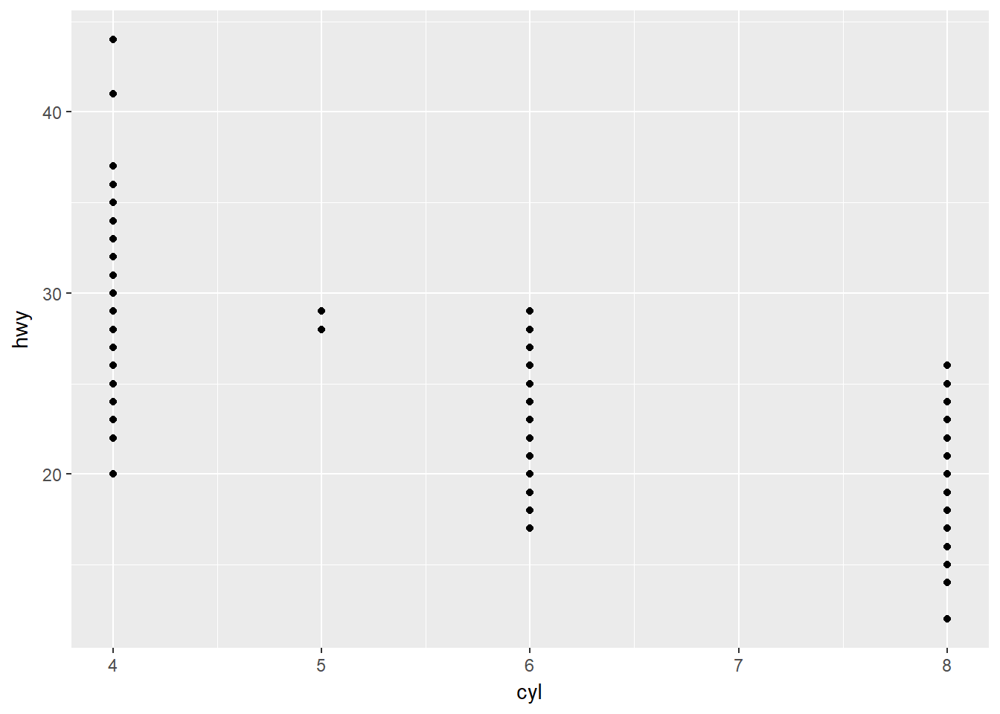

3 Capítulo 3: ggplot2 na veia!!!!
Beleza, chegamos no capítulo de data visualization, que em essência deve ser um capítulo de ggplot2. Estou animado! :D
Tá bom, entendi que os autores amam ggplot2, beleza. Ah sim, bonus points pra eles por usarem citação do Tukey, que sempre tem citações maneiras e devia ser um cara muito legal, pelo o que eu li sobre ele. :)
Enfim, vamos lá, a ideia do ggplot2 é criar uma gramática de gráficos - o que faz todo sentido quando entendemos o R como linguagem. A ideia básica aqui, se eu entendo bem a proposta, é ter comandos que fazem sentido lógico, de maneira mais intuitiva do que vemos nos gráficos básicos do R.
Carregar os pacores é moleza, e acho bacana essa organização dos pacotes no tidyverse, assim a gente carrega um tanto de coisa de uma vez.
library(tidyverse)## -- Attaching packages --------## v ggplot2 2.2.1 v purrr 0.2.4
## v tibble 1.4.2 v dplyr 0.7.4
## v tidyr 0.8.0 v stringr 1.3.0
## v readr 1.1.1 v forcats 0.3.0## -- Conflicts -----------------
## x dplyr::filter() masks stats::filter()
## x dplyr::lag() masks stats::lag()Eles não começam usando o bom e velho conjunto de dados iris - seria legal, dados biológicos e tals. Mas tranquilo, vamos mexer com motores de carro então, hehe. O tal do mpg também é um conjuntinho de dados usado em muito exemplo por aí.
E percebam que a parada já começa com um chute no pau da barraca do R: os dados estão no formato tibble, que é próprio do tidyverse, e não é exatamente igual com o formato data.frame que está na base do R (mas eles são parecidos, e é fácil converter um tibble para data.frame usando o bom e velho as.data.frame(), se precisarmos - espero nem precisar).
3.1 Começando a prática: entendendo o tibble
Carregando os dados, eu ainda tenho que acostumar com o formato tibble, mas acho que é mais coisa de hábito mesmo. Uma das características básicas dele é que se você “chama” o objeto, ele não vai tacar tudo no console como um data.frame faria. Ele mostra 6 linhas (como quando usamos head()) e no exemplo ali ele mostrou 10 colunas (não sei se é sempre assim, mas imagino que sim). Ele também nos dá as dimensões, indica os tipos de variáveis para cada coluna, e no final conta o que ficou de fora. É bacana, acho.
Vou começar a experimentar, e antes de seguir o rumo do livro, quero entender bem o tibble
Então vamos lá, primeiro “chamando” normalmente, como no livro:
mpg## # A tibble: 234 x 11
## manufacturer model displ year cyl trans drv cty hwy fl
## <chr> <chr> <dbl> <int> <int> <chr> <chr> <int> <int> <chr>
## 1 audi a4 1.8 1999 4 auto(l~ f 18 29 p
## 2 audi a4 1.8 1999 4 manual~ f 21 29 p
## 3 audi a4 2 2008 4 manual~ f 20 31 p
## 4 audi a4 2 2008 4 auto(a~ f 21 30 p
## 5 audi a4 2.8 1999 6 auto(l~ f 16 26 p
## 6 audi a4 2.8 1999 6 manual~ f 18 26 p
## 7 audi a4 3.1 2008 6 auto(a~ f 18 27 p
## 8 audi a4 quat~ 1.8 1999 4 manual~ 4 18 26 p
## 9 audi a4 quat~ 1.8 1999 4 auto(l~ 4 16 25 p
## 10 audi a4 quat~ 2 2008 4 manual~ 4 20 28 p
## # ... with 224 more rows, and 1 more variable: class <chr>O que acontece quando usamos a boa e velha summary() num tibble?
summary(mpg)## manufacturer model displ year
## Length:234 Length:234 Min. :1.600 Min. :1999
## Class :character Class :character 1st Qu.:2.400 1st Qu.:1999
## Mode :character Mode :character Median :3.300 Median :2004
## Mean :3.472 Mean :2004
## 3rd Qu.:4.600 3rd Qu.:2008
## Max. :7.000 Max. :2008
## cyl trans drv cty
## Min. :4.000 Length:234 Length:234 Min. : 9.00
## 1st Qu.:4.000 Class :character Class :character 1st Qu.:14.00
## Median :6.000 Mode :character Mode :character Median :17.00
## Mean :5.889 Mean :16.86
## 3rd Qu.:8.000 3rd Qu.:19.00
## Max. :8.000 Max. :35.00
## hwy fl class
## Min. :12.00 Length:234 Length:234
## 1st Qu.:18.00 Class :character Class :character
## Median :24.00 Mode :character Mode :character
## Mean :23.44
## 3rd Qu.:27.00
## Max. :44.00Legal, o comportamento é igualzinho a de um data.frame neste caso, o que é excelente.
Quero ver como fica o str() também:
str(mpg)## Classes 'tbl_df', 'tbl' and 'data.frame': 234 obs. of 11 variables:
## $ manufacturer: chr "audi" "audi" "audi" "audi" ...
## $ model : chr "a4" "a4" "a4" "a4" ...
## $ displ : num 1.8 1.8 2 2 2.8 2.8 3.1 1.8 1.8 2 ...
## $ year : int 1999 1999 2008 2008 1999 1999 2008 1999 1999 2008 ...
## $ cyl : int 4 4 4 4 6 6 6 4 4 4 ...
## $ trans : chr "auto(l5)" "manual(m5)" "manual(m6)" "auto(av)" ...
## $ drv : chr "f" "f" "f" "f" ...
## $ cty : int 18 21 20 21 16 18 18 18 16 20 ...
## $ hwy : int 29 29 31 30 26 26 27 26 25 28 ...
## $ fl : chr "p" "p" "p" "p" ...
## $ class : chr "compact" "compact" "compact" "compact" ...Ahhhhnnnnnnnnn, vejam que o str mostrou três classes! :O
Ah, mais um detalhe, este eu achei curioso: as variáveis categóricas (como modelo e fabricante, por exemplo) não estão como fatores, e sim como caracteres. Enfim, é só um conjunto de dados de análise, então deixa quieto…
Peraí, vou conferir uma coisa aqui:
class(mpg)## [1] "tbl_df" "tbl" "data.frame"É isso, ele funciona como um objeto de mais de uma classe. Que doido!
Não sei quais as consequências disso, mas interessante saber. Agora, acho que quando pegamos um data.frame, usamos alguma função do dplyr e criamos um novo objeto, ele é apenas um tibble. Maaaaaaas, não sei, minha experiência com isso é pequena.
Seguinte: não vou continuar com isso agora, né hora disso não! Vou coltar ao rumo do capítulo, e começar a brincar de grafiquinho, que é legal.
Então vamos lá, copiando e colando:
ggplot(data = mpg) +
geom_point(mapping = aes(x = displ, y = hwy))
Beleza, facinho.
O esquema é claramente diferente de um gráfico básico do R, que seria feito com uma função com vários argumentos e, talvez, outras funções acessórias.
Aqui temos uma função base, a ggplot(), e depois adicionamos o que eu entendo que são as tais camadas: e que neste caso foi apenas uma, usando geom_point.
Não precisa de las=1, hahahahah, os números já estão na horizontal! ;)
Ah sim, eu não gosto deste fundo cinza e da falta dos eixos com linhas sólidas, mas isso com certeza será fácil de mexer quando conhecermos melhor o pacote. Não sei o quanto o livro vai nos levar nesta direção, mas o que não falta são tutoriais de ggplot2 pela internet afora.
Tá, ele segue com um exemplo genérico, então vou pegar a deixa e fazer um gráfico no mesmo estilo, mas com outros dados, vamos ver como fica:
ggplot(data = iris) +
geom_point(mapping = aes(x = Sepal.Length, y = Sepal.Width))
Belezinha, rodou direitinho.
3.2 Exercíciooooooos
Aimeudeus, chegaram os tais exercícios, será que vamos sobreviver?
Bora descobrir!
1 - Essa eu já tinha testado antes, hehe. Mas tá aqui, ele cria apenas um “frame” vazio, esperando as camadinhas:
ggplot(data=mpg)
2 - Ah, a própria chamada do tibble em questão já indica que são 234 linhas e 11 colunas. E se quiser, sempre dá pra conferir apenas as dimensões assim:
dim(mpg)## [1] 234 113 - OK, não vou chamar o help aqui no livro, né? Mas vocês sabem como usar, ele mostrou. ;) drv é uma variável para as três classes de tração: dianteria, traseira e 4X4.
4 - Essa deve ser de boas, vamos ver:
ggplot(data = mpg) +
geom_point(mapping = aes(x = cyl, y = hwy))
Ahhnnnnnn, eles queriam que a gente notasse que cyl (número de cilindros) é uma variável discreta. Acho que era isso que eles queriam que a gente notasse, né?
5 - Bora descobrir. Olhando o help e o próprio tibble quando ele foi chamado, vemos que as duas são categóricas (apesar delas não serem fatores, e isto me angustiar profundamente, hahahaha). Então imagino que não vá prestar pra nada mesmo:
ggplot(data = mpg) +
geom_point(mapping = aes(x = class, y = drv))
Bom, na verdade até serve para uma coisa: ver quais combinações de tipo de carro com tração existem. Mas só. Não podemos saber, por exemplo, quantos carros se encaixam em cada combinação. Suponho que depois a gente vá mexer nisso, como usando um gráfico de barras, por exemplo.
OK, os exercício foram de boa, mas foram os primeiros, né? Eram pra ser de boa mesmo.
3.3 Sei lá como traduzir “Aesthetic mappings” adequadamente…
Mas entendo que vamos trabalhar em como mudar a aparência do “mapeamento”, que no caso, até agora, foi feito com o uso de pontos. Uma espiada rápida, e veremos pontinhos coloridos, então é por aí mesmo.